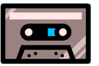
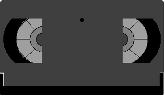
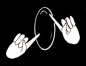

Audiotapes
Books
Education
Interpreting music
Mailing lists
Organizations
People
Periodicals and articles
Videotapes, CDs & DVDs
Web sites
Audiotapes
Books
Education
Interpreting music
Mailing lists
Organizations
People
Periodicals and articles
Videotapes, CDs & DVDs
Web sites
Audiotapes
Books
Education
Interpreting music
Mailing lists
Organizations
People
Periodicals and articles
Videotapes, CDs & DVDs
Web sites
Contains a brief history of deaf people and the church, executive offices for religious organizations, the manual alphabet, illustrated religious signs, and translations of the Lord's Prayer, the Gloria Patri, the Prayer for Grace, the Giving of Thanks, the Shema, the Blessing Over the Sabbath Candles, the Kiddush, and the Blessing Over Bread.
Sections: History and beliefs, The basic service, Holy days and festivals, Life cycle events, Home celebrations.
Christian denominations discussed: African American Methodist Church (Vol. 2, 20-41), Assemblies of God (Vol. 1, 18-36), Baptist (Vol. 1, 38-53), Christian and Missionary Alliance (Vol. 2, 60-78), Christian Congregation (Vol. 2, 80-95), Church of Christ, Scientist (Vol. 1, 72-83), Church of Jesus Christ of Latter-Day Saints (Mormon; Vol. 1, 290-308), Church of the Brethren (Vol. 2, 96-123), Church of the Nazarene (Vol. 2, 124-143), Churches of Christ (Vol. 1, 84-99), Disciples of Christ (Christian Church; Vol. 1, 100-118), Episcopalian (Vol. 1, 120-139), Evangelical Free Church of America (Vol. 2, 144-162), Greek Orthodox (Vol. 1, 140-157), International Church of the Foursquare Gospel (Vol. 2, 164-183), International Pentecostal Holiness Church (Vol. 2, 184-205), Mennonite/Amish (Vol. 2, 206-231), Jehovah's Witnesses (Vol. 1,
196-208), Lutheran (Vol. 1, 248-270), Methodist (Vol. 1, 272-289), Orthodox Churches (Vol. 2, 248-274), Pentecostal Church of God (Vol. 2, 276-295), Presbyterian (Vol. 1, 310-328), Reformed Church in America (Vol. 2, 292-317),
Religious Society of Friends (Quaker; Vol. 1, 330-347), Roman Catholic (Vol. 1, 348-366), Seventh-day Adventists (Vol. 1, 368-382), United Church of Christ
(Vol. 1, 384-405), Wesleyan (Vol. 2, 370), 388).
3000 N. Grant Ave. Springfield, MO 65803 417-833-2551 Major in Deaf Ministries. Mainstream the Deaf with interpreters in the classroom.
Sign4Him. This list is for the support, edification, and fellowship of those who interpret for the Deaf in churches and work in Deaf ministries. Deaf/HoH persons, and Sign interpreting students are also encouraged to join. Also, see Web sites under the desired denomination.
(1) Consult with Deaf people of a given denomination/religion,
(2) Deaf "missions" to that denomination/religion
(see - Earl and Shirley) or Alternate site, (3) knowledgeable interpreters, and
(4) spiritual leaders.
Video companies without websites
Note: If a link is followed by this icon:, it contains ASL, as a video or as illustrations for religious signs. If a flag is followed by this icon: , there is an animated text in that country's sign language.
Select a denomination from the table below or scroll down.
Audiotapes & audio CDs
Still Waters Revival: Sermons and books on cassette.
Books (for specific denominations, go to web and click on the desired group)
Ayers, B. Deaf diaspora: The third wave of Deaf ministry. ISBN: 0595335411. Ayers calls for the rediscovery of the spiritual legacy of the Deaf-World as he explores the history of ministry programs and proposes a definitive plan for the future. Deaf ministry patterns over the past forty years are higlighted and a description is given of the New Culture of Deafness, brought about by the radical changes in Deaf-World. Each chapter concludes with useful discussion guides for students or small groups.
Bearden, C. (1975). A handbook for religious interpreters for the Deaf. Atlanta: Home Mission Board of the Southern Baptist Convention.
Bearden, C. and J. Potter (1973). Manual of religious signs. Silver Spring, MD: National Association of the Deaf.
Blake, J. Signing the Scriptures: A starting point for interpreting the Sunday readings for the Deaf, Year A.
Signing the Scriptures: A starting point for interpreting the Sunday readings for the Deaf, Year A.
 Signing the Scriptures: A starting point for interpreting the Sunday readings for the Deaf, Year C.
CenturyOne Bookstore - Biblical studies.
Collins, S. C., Schneider, J. (Illustrator), Kifer. K. (Illustrator), & Frasnik, M. (Illustrator) (1998, November). Signing at Church: For adults and young adults. Garlic Pr; ISBN: 0931993989
Costello, E. & Lehman, L. (illustrator) (1986, April). Religious signing: The new comprehensive guide for all faiths. New York: Bantam Doubleday Dell Pub; ISBN: 0553342444
Deaf Missions on-line catalog (books).
Douglas, J. D. (Ed.) (1982, April). The new Bible dictionary. Tyndale House Pub. ISBN: 0842346678.
Flegal, D., (ed.) and Jones, R. S. (ill.) (2000, August). More sign & say: Bible verses for children. Abingdon Press; ISBN: 0687014573.
Flegal, D. (1999, January). Sign & say: Bible verses for children. Abingdon Press; ISBN: 0687074428.
Hollis, M. (1988, June). Signs for Catholic liturgy and education. Silver Spring, MD: NAD. ISBN: 0318168871
Levicoff, S. (1991). Christian counseling and the law. Chicago: Moody Press. [out of print] There is a large section on confidentiality and privileged
communication in which Levicoff describes confession and the degree of confidentiality of the priest.
Magida, A. J. & Matlins, S. (Editors) (1999, April). How to be a perfect stranger: A guide to etiquette in other people's religious ceremonies, volume 1 (and there is also a volume 2). SkyLight Paths Publishing. ISBN: 1893361012.
Martin, W. The laymen's Bible encyclopedia. The Southwestern Company.
Maxwell, M. and S. Boster (1982). Interpreting hymns for Deaf worshipers. In Sign Language Studies, 36, 217-226.
National Catholic Office for the Deaf: Resources.
Oglia, D., F. Caccamise, D. Pocobello, W. Newell, K. Cagle, and M. Mitchell (1985). TECHNICAL SIGNS MANUAL 7: Religion/Catholic. St. Petersburg, FL: MTPS.
(1980). Dictionary of sign language terms for the Church of Jesus Christ of Latter-Day Saints. Salt Lake City, UT: The Church of Jesus Christ of Latter-Day Saints.
(1978, June). The New Testament English version for the Deaf. Baker Book House; ISBN: 0801067251.
New Testament for the Deaf. Council Bluffs, IA: Deaf Missions.
(1975). Sing praise. Nashville: Broadman Press.
Sampley, D. (1990, June 18). A guide to Deaf ministry: Let's sign worthy of the Lord. Zondervan. ISBN-10: 0310521912,
ISBN-13: 978-0310521914. DeAnn Sampley's book is about ministry to the deaf -- not only worship, but also nurture, service, and understanding. A Guide to Deaf Ministry reveals that serving deaf people involves cross-cultural communication. Those who would minister to the deaf must understand their needs, their language, their world.
Schneider, J., Kifer, K., Frasnik, M. (ills.) and Collins, S. H. (1998, November). Signing at Church: For adults and young adults. Garlic Pr; ISBN: 0931993989.
Sign to the Lord a new song. Milwaukee, Wisconsin: Northwestern Publishing House. This 279 page book describes the signs for hundreds of words and phrases used in the worship setting. It provides alternate signs for words that have multiple meanings. Clear, sharp pictures enhance the understanding of many of the signs.
Tyree, D., (comp.) and Harrison, S. J. (ill.) (2000, June). With heart and hands and voices: Songs with Sign Language. Abingdon Press; ISBN: 0687089921.
Yates, L. (January 10, 2007). Interpreting at Church: A Paradigm for Sign Language Interpreters. BookSurge Publishing. ISBN-10: 1419653180, ISBN-13: 978-1419653186. Leo Yates presents the nuts and bolts of having an effective deaf ministry. The book covers from Certification for Sign language interpreters to how to be an effective interpreter in different worship settings. One of the great features of this book is the comprehensive sign dictionary that is included. It is truly a great tool for my church as it continues to discern their calling into deaf ministry.
Yount, W. R. (1976, June). Be opened!: An introduction to ministry with the deaf. Baptist Sunday School Board. ISBN-10: 0805432167, ISBN-13: 978-0805432169.
Signing the Scriptures: A starting point for interpreting the Sunday readings for the Deaf, Year C.
CenturyOne Bookstore - Biblical studies.
Collins, S. C., Schneider, J. (Illustrator), Kifer. K. (Illustrator), & Frasnik, M. (Illustrator) (1998, November). Signing at Church: For adults and young adults. Garlic Pr; ISBN: 0931993989
Costello, E. & Lehman, L. (illustrator) (1986, April). Religious signing: The new comprehensive guide for all faiths. New York: Bantam Doubleday Dell Pub; ISBN: 0553342444
Deaf Missions on-line catalog (books).
Douglas, J. D. (Ed.) (1982, April). The new Bible dictionary. Tyndale House Pub. ISBN: 0842346678.
Flegal, D., (ed.) and Jones, R. S. (ill.) (2000, August). More sign & say: Bible verses for children. Abingdon Press; ISBN: 0687014573.
Flegal, D. (1999, January). Sign & say: Bible verses for children. Abingdon Press; ISBN: 0687074428.
Hollis, M. (1988, June). Signs for Catholic liturgy and education. Silver Spring, MD: NAD. ISBN: 0318168871
Levicoff, S. (1991). Christian counseling and the law. Chicago: Moody Press. [out of print] There is a large section on confidentiality and privileged
communication in which Levicoff describes confession and the degree of confidentiality of the priest.
Magida, A. J. & Matlins, S. (Editors) (1999, April). How to be a perfect stranger: A guide to etiquette in other people's religious ceremonies, volume 1 (and there is also a volume 2). SkyLight Paths Publishing. ISBN: 1893361012.
Martin, W. The laymen's Bible encyclopedia. The Southwestern Company.
Maxwell, M. and S. Boster (1982). Interpreting hymns for Deaf worshipers. In Sign Language Studies, 36, 217-226.
National Catholic Office for the Deaf: Resources.
Oglia, D., F. Caccamise, D. Pocobello, W. Newell, K. Cagle, and M. Mitchell (1985). TECHNICAL SIGNS MANUAL 7: Religion/Catholic. St. Petersburg, FL: MTPS.
(1980). Dictionary of sign language terms for the Church of Jesus Christ of Latter-Day Saints. Salt Lake City, UT: The Church of Jesus Christ of Latter-Day Saints.
(1978, June). The New Testament English version for the Deaf. Baker Book House; ISBN: 0801067251.
New Testament for the Deaf. Council Bluffs, IA: Deaf Missions.
(1975). Sing praise. Nashville: Broadman Press.
Sampley, D. (1990, June 18). A guide to Deaf ministry: Let's sign worthy of the Lord. Zondervan. ISBN-10: 0310521912,
ISBN-13: 978-0310521914. DeAnn Sampley's book is about ministry to the deaf -- not only worship, but also nurture, service, and understanding. A Guide to Deaf Ministry reveals that serving deaf people involves cross-cultural communication. Those who would minister to the deaf must understand their needs, their language, their world.
Schneider, J., Kifer, K., Frasnik, M. (ills.) and Collins, S. H. (1998, November). Signing at Church: For adults and young adults. Garlic Pr; ISBN: 0931993989.
Sign to the Lord a new song. Milwaukee, Wisconsin: Northwestern Publishing House. This 279 page book describes the signs for hundreds of words and phrases used in the worship setting. It provides alternate signs for words that have multiple meanings. Clear, sharp pictures enhance the understanding of many of the signs.
Tyree, D., (comp.) and Harrison, S. J. (ill.) (2000, June). With heart and hands and voices: Songs with Sign Language. Abingdon Press; ISBN: 0687089921.
Yates, L. (January 10, 2007). Interpreting at Church: A Paradigm for Sign Language Interpreters. BookSurge Publishing. ISBN-10: 1419653180, ISBN-13: 978-1419653186. Leo Yates presents the nuts and bolts of having an effective deaf ministry. The book covers from Certification for Sign language interpreters to how to be an effective interpreter in different worship settings. One of the great features of this book is the comprehensive sign dictionary that is included. It is truly a great tool for my church as it continues to discern their calling into deaf ministry.
Yount, W. R. (1976, June). Be opened!: An introduction to ministry with the deaf. Baptist Sunday School Board. ISBN-10: 0805432167, ISBN-13: 978-0805432169.
Education.1
Central Bible CollegeChurch Interpreter Training Institute.
Cincinnati Christian University. 2700 Glenway Ave. Box 4320, Cincinnati, OH 45204-3200. 513-244-8100. A.A. degree in Deaf Studies with Cincinnati State Tech and Community College, B.S. in Biblical Studies plus Interpreters Training Program with above college.
Concordia Theological Seminary: Church Interpreter Training Institute.
Interpreting music (See also Hymns in ASL, below)
Bar-Tzur, D. Cultural and linguistic changes in translating hymns into ASL.
Cultural and linguistic changes in translating hymns into ASL.
 Songs and ritual texts.
Blackman, M. J. (2004, December). Theoretical approach: Religious interpreting as performance. Views, 21, 11. pp. 1, 26-27. Abstract: In the field of interpretation, there are no theoretical approaches or models that include performance and music as essential parts of an equivalent translation... Performance theory provides the necessary framework needed to render an equivalent translation of gospel music.
Church Interpreter training Institute. Experience interpreting during daily worship Services.
Students will have the unique opportunity to pair classroom training with actual "hands-on" interpreting in a Lutheran liturgical worship context. (To learn about our chapel and worship click here.) CITI understands that some students will come from churches that use a more free, non-liturgical worship; however, we believe that students from all backgrounds will be enriched by the experience gained interpreting in the inspiring setting that the seminary provides.
DeafTODAY. (2004, November 26). Why music is an important outlet in a silent world. Thousands of our deaf population retain enough hearing to appreciate the uplifting influence of good music, and many more, like myself, who have no hearing whatever, are still programmed by the songs and music we heard before the door closed on us.
Half-n-Half: Musically inspired ASL storytelling workshops. Secular, but such a workshop may be beneficial.
Interpreting spiritual music. Basically, this is a storage bank; a forum for members to discuss and post ASL interpretations to their favorite religious or spiritual songs. It is a teaching/interpreting tool, we are not a service. If you have a song you would like some help with, PLEASE submit the lyrics and your gloss, showing where you are having trouble. All ideas welcome. Please do not copy from books. This is intended for your own concepts to be used.
Longo Tuccelli, M. Interpreting the Mass. General tips, vocabulary, music and the actual Mass are shown for those interested in improving their ministry to the Catholic Deaf community. Produced for the Diocese of St. Augustine, Florida. Signed and voiced with text for vocabulary.
Massoud, L.
Interpreting in various settings [Videotape in 3 volumes]. Harris Communications. Settings discussed: oral, educational (K-12 and post-secondary), employment/rehabilitation, performing arts interpreting, medical interpreting, telephone, round table, Deaf-Blind, interpreting for mis-educated Deaf persons, legal, artistic (music), ASL to English, religious, platform, and health/counseling.
Rejoicing/ Praise in signs. A three-camera format and a supporting cast of 25 will show you the hows and whys of a dozen choruses, group songs, and solos done in Sign Language. This will truly enthuse you in the use of music when you have deaf people in your church. A MUST for signers and interpreters in the church setting. Produced by the talented Marietta Patchin.
Songs and ritual texts.
Blackman, M. J. (2004, December). Theoretical approach: Religious interpreting as performance. Views, 21, 11. pp. 1, 26-27. Abstract: In the field of interpretation, there are no theoretical approaches or models that include performance and music as essential parts of an equivalent translation... Performance theory provides the necessary framework needed to render an equivalent translation of gospel music.
Church Interpreter training Institute. Experience interpreting during daily worship Services.
Students will have the unique opportunity to pair classroom training with actual "hands-on" interpreting in a Lutheran liturgical worship context. (To learn about our chapel and worship click here.) CITI understands that some students will come from churches that use a more free, non-liturgical worship; however, we believe that students from all backgrounds will be enriched by the experience gained interpreting in the inspiring setting that the seminary provides.
DeafTODAY. (2004, November 26). Why music is an important outlet in a silent world. Thousands of our deaf population retain enough hearing to appreciate the uplifting influence of good music, and many more, like myself, who have no hearing whatever, are still programmed by the songs and music we heard before the door closed on us.
Half-n-Half: Musically inspired ASL storytelling workshops. Secular, but such a workshop may be beneficial.
Interpreting spiritual music. Basically, this is a storage bank; a forum for members to discuss and post ASL interpretations to their favorite religious or spiritual songs. It is a teaching/interpreting tool, we are not a service. If you have a song you would like some help with, PLEASE submit the lyrics and your gloss, showing where you are having trouble. All ideas welcome. Please do not copy from books. This is intended for your own concepts to be used.
Longo Tuccelli, M. Interpreting the Mass. General tips, vocabulary, music and the actual Mass are shown for those interested in improving their ministry to the Catholic Deaf community. Produced for the Diocese of St. Augustine, Florida. Signed and voiced with text for vocabulary.
Massoud, L.
Interpreting in various settings [Videotape in 3 volumes]. Harris Communications. Settings discussed: oral, educational (K-12 and post-secondary), employment/rehabilitation, performing arts interpreting, medical interpreting, telephone, round table, Deaf-Blind, interpreting for mis-educated Deaf persons, legal, artistic (music), ASL to English, religious, platform, and health/counseling.
Rejoicing/ Praise in signs. A three-camera format and a supporting cast of 25 will show you the hows and whys of a dozen choruses, group songs, and solos done in Sign Language. This will truly enthuse you in the use of music when you have deaf people in your church. A MUST for signers and interpreters in the church setting. Produced by the talented Marietta Patchin.
Mailing lists
abcaslgloss. This group is an offshoot from Sign4Him [Webmaster's note: see below], in order to keep our glossed songs easily accessible. Basically, this is a gloss bank. It is a forum where people can find and post glosses to their favorite songs, religious or otherwise. All gloss ideas welcome.
AFBID. This is a group for interpreters and others involved in deaf ministry in Southern Baptist churches in Florida. It is for the exchange of information about interpreting in the church setting, working with deaf people and for support and prayer within the group. Members must use their real name when joining.
BelleMeadowsDeafNews, the newsletter of Belle Meadows Baptist Deaf Ministry in Bristol, VA. We want you to know what's up each month in our Deaf Church, as well as deaf activities, special events, Deaf Bible studies, ASL classes, interpreter training, and other opportunities for Christian Deaf fellowship.
bethany-interpreters. Interpreters Sunday School Class - Bethany United Methodist Church - Austin, TX.
ChFLInterps. Group of Christian sign language interpreters in Florida.
Christian-Terps. To subscribe, send e-mail to: Listserver@emeraldis.com., no subject header, body should read: "subscribe Christian-Terps (your address)"
christianterps. Sign language interpreters interested in religious interpreting work, committed to supporting each other, the Deaf community, skill-development, and quality services.
churchterps. Welcome, all of you who are interpreting in a church, are thinking about getting involved in Deaf ministry, or are willing to share your church interpreting experiences with others. We're here to offer support & encouragement, discuss topics that relate to Deaf ministry, provide feedback on tough to sign concepts, and be a listening ear when you need one :) Interpreting in church is a challenging task, that's why we need each other! Ephesians 4:1-7.
ChurchInterpreters. Discussion for religious interpreters. This group was designed to help in problems and situations that you sometimes get into when interperting for the Deaf at your church. Maybe someone has experienced the same thing and tell you the best approach in solving the problem.
deaf-adventist. Seventh-day Adventist deaf & interpreters for the deaf.
DeafAM. Welcome to the Deaf Apostolic Ministries group! We are here to talk about all things related to Deaf Ministry. Whether you are a member of a Deaf Ministry, an Interpreter, or just an interested person, there is a place for you here! We will have topics of discussion and polls to see what you think about various issues, databases where you can find other churches with Deaf Ministries, and a database of members where you can find new friends!
DeafCatholics.
Too often, Deaf Catholics' questions and curiosity about Catholic faith linger on. It might be because some of us were raised in a hearing Catholic home where we admire our family's practices yet not fully understand the teachings behind it because of language barrier, or it might be because we were not given accommodation (i.e. interpreter) in religious classes, or it might be something else. Majority of us were born and raised by hearing parents so that when we became adults, we become lost or feel confused in our Catholic practice. It is my hope that this group will facilitate or improve our understanding of the Holy Trinity and reflect on how God is calling us to a deeper union with him.
dbspirit. By sharing Bible verses, prayer requests, songs, praises, testimony, and plain sharing and fellowship with one another with the common bond of being Deaf Blind, Christian, and often have contacts with other believers. We welcome anyone who will share and edify one another through Scriptures and JOY of fellowship in HIM!
DeafMinistry. This is a place where Deaf Ministry Interpreters and Workers can discuss issues which we face on a weekly basis. The mediator holds dual national certification through Registry of Interpreters for the Deaf (RID).
exaltdeaffamilysclub. You're a creation of God, let Him lead you Throw His love and Grace. You are a deaf or an interpreter, you're place is here, take it and rejoice your self in the name of the Lord.
HANDSOFGOD. This is a group for people, Deaf, deaf, hard of hearing, and interpreters alike.
Heartsigns or send email to: Heartsigns@yahoogroups.com.
Welcome to Heartsigns. This is a Christian email group for Deaf, Hard of Hearing, Sign language interpreters, Deaf Ministry Workers and others involved in the Deaf Community. It is our intent to share information, ideas, suggestions, the love of Jesus Christ and make new friends.
hishandsdeafministry. This group is for members, interpreters and guest of His hands deaf ministry that allows them to ask any questions about our ministry.
HiSigns. This group is for those who are devoted to interpreting the message ot Jesus Christ to those who are unable to hear the messsage. This is a forum for those who are interpreters or who work with the Deaf. Please use group as a way to inform other interpreters about events or to ask question about how they would interpret in certain situations. Interpreters from every walk of life are welcome: from those who are just learning sign language to those who have been interpreting for for a long time.
Interpreting spiritual music. Basically, this is a storage bank; a forum for members to discuss and post ASL interpretations to their favorite religious or spiritual songs. It is a teaching/interpreting tool, we are not a service. If you have a song you would like some help with, PLEASE submit the lyrics and your gloss, showing where you are having trouble. All ideas welcome. Please do not copy from books. This is intended for your own concepts to be used.
L-Soft. Click on "Search for a mailing list of interest" and search "Christian".
religiousterps. This group is for Sign Language Interpreters who work in religious settings, or those interested in doing so, as well as Deaf/HoH individuals with an interest in this ministry. Our ultimate goal is to sharpen our skills and learn new strategies to help us face the challenges of interpreting in religious settings.
SCCASLI. We welcome anyone who is a Roman Catholic and an American Sign Language interpeter, and people of any faith who interpret in Catholic settings. We do not debate religion, but strive to help one another serve God. To this end we have regular meetings and share information through this email service.
 To subscribe, send an empty message to sign4him-subscribe@makelist.com
To subscribe, send an empty message to sign4him-subscribe@makelist.com
 To unsubscribe, send a message to sign4him-unsubscribe@makelist.com
Signing4Him. The goal of this group is to provide a local resource between interpreters who work in the religious environment. Allowing the opportunity to ask questions based on religious concepts and build a network of resources unique to this specialized area of interpreting.
To unsubscribe, send a message to sign4him-unsubscribe@makelist.com
Signing4Him. The goal of this group is to provide a local resource between interpreters who work in the religious environment. Allowing the opportunity to ask questions based on religious concepts and build a network of resources unique to this specialized area of interpreting.
Organizations
Info to Go: National religious organizations for Deaf and Hard of Hearing people.
People
Periodicals and articles2
Blackman, M. J. (2004, December). Theoretical approach: Religious interpreting as performance. Views, 21, 11. pp. 1, 26-27. Abstract: In the field of interpretation, there are no theoretical approaches or models that include performance and music as essential parts of an equivalent translation... Performance theory provides the necessary framework needed to render an equivalent translation of gospel music.
Dillman, M. J. (2004, January). What does that really mean? A text analysis method for religious interpreting. VIEWS, 20, 11. Excerpt: The following will illustrate a text analysis in preparation for interpreting the reading from Romans 10:9-10, 13, and 17 while taking Deaf culture into consideration.
High, K. (2003, December). Creating sacred space: The role of the interpreter in the religious setting. VIEWS, 21, 1. Excerpt: Ultimately, sacred space is not a place at all but simply an effort throught the shaping of outward space to inspire an inner space where the divine can be encountered. Each religion has their own concept of what that experience of the divine is like but all religions seek that inner sacred space.
Magazines [and videos] - Deaf ministry, Earl and Shirley.
Terrio, S. (2004, December). Theoretical approach: Religious interpreting as performance. Views, 21, 11. pp. 27-28. Abstract: Two examples of ASL translations with the English text, the story before (background), the story now (meaning), and the story's feeling (emotion).
Vision Magazine. Spread God^s message through the support of the Deaf and Hard of Hearing Pastoral Ministry so that we may all be one in Christ!
 Videotapes, CDs & DVDs.
GENERAL AND DENOMINATIONAL
Bar-Tzur, D. (2004). Technical & specialized vocabulary ASL dictionary. Signs of Development. Over 15,000 entries. The dictionary is set up in major categories and further subdivided into categories making navigation as simple as point and click and each entry shows David as the sign model signing the term. There are approximately 2,000 entries for various religions. To order.
Basic Bible Studies. Each of the Bible studies are led by a well known teacher who is skilled in both Bible knowledge and the language of signs. The study is presented in four 30 minute sessions and is excellent for small group studies in both the church and home.
Bill Rice Ranch. "Who can forgive sin" video - (other titles available). Website not presently extant. Contact at BillRiceRanch@worldnet.att.net.
Blake, J. Signing the Scriptures: A starting point for interpreting the Sunday readings for the Deaf, Year A.
Signing the Scriptures: A starting point for interpreting the Sunday readings for the Deaf, Year A.
 Signing the Scriptures: A starting point for interpreting the Sunday readings for the Deaf, Year C.
Campus Crusade for Christ. Jesus videos in ASL, Russian and Costa Rican Sign Languages.
Claggett Statement. Mennonite Board of Missions, Goshen, Indiana. [Video recording]. 20 min., ASL only, no voice. To order, contact Sheila Yoder at adnet@adnetonline.org.
[An English translation was also printed with an introduction by Charlotte Baker-Shenk in Sojourners (30 March 1985) with the title "Breaking the shackles."]
Colarusso, E. & O'Meara, M. (2008). Liturgical Signs & Prayers: A Resource for Deaf Ministries. It offers a glossary of religious terms in sign language, as well as common prayers. It is a valuable tool for any catechist because it aids all of us in understanding these words. The DVD also explains the order of the Mass, which is done with a hearing priest and a sign language interpreter, gives guidance on where the interpreter should stand, and illustrates the rites for a marriage, baptism and funeral. Any parish desiring to live out our call to inclusion should add this to their list of "Must Haves." The DVD and accompanying resource book can be ordered from either archdiocesan office [Baltimore or Washington] for $20.
Deaf Reformed Ministries. I can't determine if these are signed or not.
Fant, L.
Bible characters. If you scroll down, you can see these videotapes listed separately.
Signing the Scriptures: A starting point for interpreting the Sunday readings for the Deaf, Year C.
Campus Crusade for Christ. Jesus videos in ASL, Russian and Costa Rican Sign Languages.
Claggett Statement. Mennonite Board of Missions, Goshen, Indiana. [Video recording]. 20 min., ASL only, no voice. To order, contact Sheila Yoder at adnet@adnetonline.org.
[An English translation was also printed with an introduction by Charlotte Baker-Shenk in Sojourners (30 March 1985) with the title "Breaking the shackles."]
Colarusso, E. & O'Meara, M. (2008). Liturgical Signs & Prayers: A Resource for Deaf Ministries. It offers a glossary of religious terms in sign language, as well as common prayers. It is a valuable tool for any catechist because it aids all of us in understanding these words. The DVD also explains the order of the Mass, which is done with a hearing priest and a sign language interpreter, gives guidance on where the interpreter should stand, and illustrates the rites for a marriage, baptism and funeral. Any parish desiring to live out our call to inclusion should add this to their list of "Must Haves." The DVD and accompanying resource book can be ordered from either archdiocesan office [Baltimore or Washington] for $20.
Deaf Reformed Ministries. I can't determine if these are signed or not.
Fant, L.
Bible characters. If you scroll down, you can see these videotapes listed separately.
The Christmas Story - with Paco Joyce as "small boy".
David and Goliath. 20 minutes, sound, color, voice/sign narration, and in the DVD format.
Joseph Part 1 30 minutes, sound, color, voice/sign narration, and in DVD format.
Joseph Part 2 30 minutes, sound, color, voice/sign narration, and in DVD format.
Moses. 45 minutes, sound, color, voice/sign narration, and in the DVD format.
Noah's Ark. 20 Minutes, sound, color, voice/sign narration, and in the DVD format.
First Baptist Church (Deaf Dept). A variety of videos for the Deaf.
Harris Communications web store: Religion.
How to have a Deaf ministry. George Joslin gives step by step suggestions to help a church develop a ministry with deaf persons. He outlines how to have a Deaf Ministry in your church by a study of 10 areas: Deafness, Deaf ministry, organizing, starting a Sign Language training program, enlisting Deaf people, ministering to Deaf children and adults, ministering to special groups, Evangelism, the role of interpreter, and resources.
Jesus Film Project. The JESUS video is available in American Sign Language, Russian Sign Language, Costa Rican Sign Language, Korean Sign Language, Australian Sign Language, Japanese Sign Language, Romanian Sign Language, Ukrainian Sign Language, Brazilian Sign Language.
Journey to Bethany - Stories from the New Testament. This is the story of the life of Christ in 50 segments done by Vesta Bice Sauter using flannelgraph in American Sign Language. The two volume set is 4 hours long.
Longo Tuccelli, M. Interpreting the Mass. General tips, vocabulary, music and the actual Mass are shown for those interested in improving their ministry to the Catholic Deaf community. Produced for the Diocese of St. Augustine, Florida. Signed and voiced with text for vocabulary.
Magazines and videos - Deaf ministry, Earl and Shirley. Scroll down to videotapes.
Massoud, L.
Interpreting in various settings [Videotape in 3 volumes]. Harris Communications. Settings discussed: oral, educational (K-12 and post-secondary), employment/rehabilitation, performing arts interpreting, medical interpreting, telephone, round table, Deaf-Blind, interpreting for mis-educated Deaf persons, legal, artistic (music), ASL to English, religious, platform, and health/counseling.
Mennonite Media. "Beyond the News" video series "Money" open captioned, "Facing Death " closed captioned.
Messages in art by chalk artist Howard Baldwin. Howard Baldwin draws nine Messages in Art or "Chalk Talks" as George Joslin signs them in ASL. Each message is evangelistic and take from 15 to 20 minutes to draw and tell. Tape 1 - The Praying Hands, Christ at Door, The Good Shepherd. Tape 2 - The Haven of Rest, The Master's Hand, God's Gardens. Tape 3 - Who is Jesus? The Road to Emmaus, Bridge Over Troubled Waters.
Montoya, K. 2007, (March 18). Sign Worship Drama; CB Deaf Ministry.Worship in a new demension, praise God with your whole body!
Multi-Media Evangelism. Teaching videos for the Deaf.
Old Testament Bible stories. This is a library of 12 Old Testament Bible Stories designed for deaf adults, youth and children. The entire set is about three and a half hours long, with two tapes. The use of the visual aid of flannelgraphs is skillfully combined with sign language and a dramatic sound track to make the Bible come alive to both the deaf and the hard of hearing. The signing is by Vesta Bice Sauter.
Rejoicing/ Praise in signs. A three-camera format and a supporting cast of 25 will show you the hows and whys of a dozen choruses, group songs, and solos done in Sign Language. This will truly enthuse you in the use of music when you have deaf people in your church. A MUST for signers and interpreters in the church setting. Produced by the talented Marietta Patchin.
Religious signs. George Joslin has been a pastor and worked with deaf people from all over America. He takes time to explain each word and the sign that is used. He explains that different signs are often used for the same word or concept. At times both signs may be correct but at other times and places another sign may be more helpful.
Sharing the Good News. Howard Baldwin shows how to share Christ with others using lifestyle personal evangelism. This tape is signed by George Joslin.
Songs, signs & stories for Vacation Bible School and Sunday School. This is a tape that can be used to teach hearing boys and girls American Sign Language in Vacation Bible School. Children learn songs in sign language as well as five-scripture verses that cover the Plan of Salvation. Vesta Bice Sauter tells one of the Stories of Jesus using flannelgraphs each of the five days of Bible School.
Still Waters Revival: Video author list.
The Bible: American Sign Language Translation. Deaf Missions. DVD or VHS. The first translation of God's Word into American Sign Language. The New Testament and several books in the Old Testament are completed. Translation teams of ASL and original language experts work together to produce a translation that is both accurate and understandable, and which is not dependent on English translations of the Bible. English voice-overs are not included. Some of the many helpful features of this translation include sharp, colorful close-ups of the skilled Deaf signers; on-screen chapter and verse index for easy selection of Biblical passages; and helpful graphics, notes, maps and illustrations.
 Genesis.
Genesis.
 Exodus.
Exodus.
 Joshua.
Joshua.
 Judges.
Judges.
 Ruth/Jonah.
Ruth/Jonah.
 1 Samuel.
1 Samuel.
 Daniel.
Daniel.
 The New Testament Boxed Set (DVD). The New Testament boxed set - 5 discs, Includes all 27 New Testament books and a booklet which highlights the history of the Omega Project.
The New Testament Boxed Set (DVD). The New Testament boxed set - 5 discs, Includes all 27 New Testament books and a booklet which highlights the history of the Omega Project.
 Matthew.
Matthew.
 Mark.
Mark.
 Luke.
Luke.
 John.
John.
 Acts.
Acts.
 Romans.
Romans.
 1 Corinthians.
1 Corinthians.
 2 Corinthians.
2 Corinthians.
 Galatians/Ephesians/Philippians.
Galatians/Ephesians/Philippians.
 Colossians/1 and 2 Thessalonians.
Colossians/1 and 2 Thessalonians.
 1 and 2 Timothy/Titus/Philemon.
1 and 2 Timothy/Titus/Philemon.
 Hebrews.
Hebrews.
 James/1 and 2 Peter.
James/1 and 2 Peter.
 1,2, and 3 John/Jude.
1,2, and 3 John/Jude.
 Revelation.
Tuccelli, M.
Revelation.
Tuccelli, M. Conceptual accuracy in religious signing. As an ordained evangelist, Mike Tuccelli has preached hundreds of revivals and has seen inconsistencies in signs for religious concepts. Five hundred signs most often used in church interpreting are shown conceptually.
Conceptual accuracy in religious signing. As an ordained evangelist, Mike Tuccelli has preached hundreds of revivals and has seen inconsistencies in signs for religious concepts. Five hundred signs most often used in church interpreting are shown conceptually.
 Into His marvelous light. A fundamental Bible study for Deaf people. Shows the importance of the new birth Jesus spoke about in the first chapter of John. Signed and voiced with on-screen text.
Into His marvelous light. A fundamental Bible study for Deaf people. Shows the importance of the new birth Jesus spoke about in the first chapter of John. Signed and voiced with on-screen text.
 DrSign "Key" Bible study. A fundamental Bible study for Deaf people. Emphasizes the importance of not adding to or taking away from God's Word using the analogy of a key fitting into a lock. Signed, voiced with on-screen text.
Walking in the footsteps of Jesus. This is a video Tour of the Holy Land with a group of deaf and hearing people, led by Ray Bearden and Clifford Bruffey . They visit Jerusalem, the Sea fo Galilee, Capernaum, Nazareth, Bethlehem, the old market place in Jerusalem, Jericho and the Dead Sea. They worship together at the Garden Tomb and take the Lord's Supper together by the sea of Galilee.
World Christian video directory.
Worship in Sign Language with Paul William Ellis contains a total of 13 songs. Viewers will enjoy watching the music come to life as Ellis moves to the rhythm of each song. This is an uplifting video for Deaf individuals, interpreters and anyone interested in experiencing the joy of worship through song. Songs include: Worship You; Worship the Lord; Worship the King; Exhalt the Lord our God; Breathe One Me; Worthy; Hallelujah to the Lamb; In His Presence; Holy, Holy, Holy; Zion; I Worship You; I Choose to Worship; We Shall Behold Him.
Anabaptist Deaf Ministries
DrSign "Key" Bible study. A fundamental Bible study for Deaf people. Emphasizes the importance of not adding to or taking away from God's Word using the analogy of a key fitting into a lock. Signed, voiced with on-screen text.
Walking in the footsteps of Jesus. This is a video Tour of the Holy Land with a group of deaf and hearing people, led by Ray Bearden and Clifford Bruffey . They visit Jerusalem, the Sea fo Galilee, Capernaum, Nazareth, Bethlehem, the old market place in Jerusalem, Jericho and the Dead Sea. They worship together at the Garden Tomb and take the Lord's Supper together by the sea of Galilee.
World Christian video directory.
Worship in Sign Language with Paul William Ellis contains a total of 13 songs. Viewers will enjoy watching the music come to life as Ellis moves to the rhythm of each song. This is an uplifting video for Deaf individuals, interpreters and anyone interested in experiencing the joy of worship through song. Songs include: Worship You; Worship the Lord; Worship the King; Exhalt the Lord our God; Breathe One Me; Worthy; Hallelujah to the Lamb; In His Presence; Holy, Holy, Holy; Zion; I Worship You; I Choose to Worship; We Shall Behold Him.
Anabaptist Deaf Ministries
2272 Old Philadelphia Pike
Lancaster, PA 17602-3417
717-392-6752
email: fdmc2270@aol.com
Baptist Church Planters
PO Box 836
Elyria, OH 44036-0836
Deaf Media Ministries
8614 Nerstrand Blvd
Nerstrand, MN 55053-2617 USA
TTY: 507-334-4192
Voice: 507-332-2182
Deaf Opportunity Outreach
Box 250
Union Mills , NC 28167
828-287-3723.
Deaf Outreach Ministries
2223 E Lockwood
Wichita, KS 67216
email: jsloan1@aol.com
First Baptist Church
523 Sibley St.
Hammond, IN 46320
219-932-0711 V/TDD
Focus on the Family
Colorado Springs, CO 80995-7451
719-548-4601 TTY 800 -232-6459 V
Harvest Productions (E.B.M.)
P.O. Box 2225
Kokomo, IN 46904
765-455-2112
email: harvestproductions@ebm.org
NEST Entertainment
6100 Colwell Blvd
Irving, TX 75039
888-454-3711
Rainbow Film Ministries
2102 W. 34th St
Houston, TX 77018
800-777-8177
Reality Outreach
Rainbow Film Ministries
M.P.O. box 412
Niagara Falls, NY 14302-0412
Scripture Sign Project
PO Box 27
Middletown, NY 10940
914-692-2848
SonSign Productions
101 N Beaumont Street.
St Louis, MO. 63103
314-533-6035 V\TTY
Total Language Communications
Box 565
Indian Rocks Beach, FL 33785
800-306-7024 V 813-593-1376 TDD
Watchtower (Jehovah's Witness)
25 Columbia Heights
Brooklyn, NY 11201-2483
Yorktown Center
Lombard, IL 60148
630-652-6852 V
 Web sites
Web sitesBIBLE STUDY
Bar-Tzur, D. Troublesome terms to translate in the Jewish and Christian Bibles.
Bible gateway - search the Bible in nine languages and multiple Bible version.
BibleTexts.com online Bible commentary.
Classic Bible Commentaries. This is an excellent place to start!
Computer-assisted Bible analysis.
Easier English and on-line Bibles.
Godsview.com: Online Bible, Concordance and other study aids.
Hitchcock's Bible names dictionary.
King James Version. Helpful short commentaries on words and phrases.
New Advent Bible. Good short commentaries.
Online parallel Bible. By Nick Hengeveld. Many versions for browsing or searching, including the American Standard Version (1901), New American Standard Bible (with notes), English Standard Version (with notes), New International Version (with notes), King James Version, New King James Version (with notes), Darby's New Translation, Young's Literal Translation, the Amplified Bible, Contemporary English Version, the New Living Translation, The Message, and a modern-spelling edition of Wycliffe's New Testament. Search on whole words, parts of words, or phrases. To see commentaries, type the verse in the search box, click search, and then click on the box labeled "comm."
Postmodern Bible project and commentary.
Recommended Bible study books/resources.
Resource pages for Biblical studies.
ScriptureText.com. Translations into many foreign languages, as well as parallel English versions, and a lexicon.
Troublesome terms to translate in the Jewish and Christian Bibles.
Bible gateway - search the Bible in nine languages and multiple Bible version.
BibleTexts.com online Bible commentary.
Classic Bible Commentaries. This is an excellent place to start!
Computer-assisted Bible analysis.
Easier English and on-line Bibles.
Godsview.com: Online Bible, Concordance and other study aids.
Hitchcock's Bible names dictionary.
King James Version. Helpful short commentaries on words and phrases.
New Advent Bible. Good short commentaries.
Online parallel Bible. By Nick Hengeveld. Many versions for browsing or searching, including the American Standard Version (1901), New American Standard Bible (with notes), English Standard Version (with notes), New International Version (with notes), King James Version, New King James Version (with notes), Darby's New Translation, Young's Literal Translation, the Amplified Bible, Contemporary English Version, the New Living Translation, The Message, and a modern-spelling edition of Wycliffe's New Testament. Search on whole words, parts of words, or phrases. To see commentaries, type the verse in the search box, click search, and then click on the box labeled "comm."
Postmodern Bible project and commentary.
Recommended Bible study books/resources.
Resource pages for Biblical studies.
ScriptureText.com. Translations into many foreign languages, as well as parallel English versions, and a lexicon.
DEAF MINISTRY
About.com. International Deaf missions and ministries.
American Ministries to the Deaf.
Articles: Deaf culture and ministry.
ASL dictionary for Scriptures. Not really a dictionary but a list of synonyms for many of the words that appear in the scriptures and the Book of Mormon with an English gloss word to indicate which sign might be equivalent in meaning.
American Ministries to the Deaf.
Bar-Tzur, D. Humor and stories for interpreters: Religious interpreting.
Humor and stories for interpreters: Religious interpreting.
 (2007, November 27). My religious background.
B.E.L.I.E.V.E. is building bonds of togetherness via the art of ASL performing. The members of B.E.L.I.E.V.E. intend to be a source of unity, compassion, spiritual strength, and love to ALL our brothers and sisters. We believe that - age, ethnic origin, color, religion, sexual orientation, political affiliation, gender, hearing status, and all other forms of diversity enrich and strengthen us as a family and we welcome all with open arms.
Beyond All Words is a ministry dedicated to spreading the good news by means of creative medium. One such medium is body worship. Body worship is built around the American Sign Language (ASL) and has been put to use around the world.
BeyondAllWords.org. (2006, May 9). Good Friday - Carry My Cross.
Bill Rice Ranch. Camp for the Deaf: offers much literature on training workers, learning sign language, Bible resources, starting a Deaf ministry, etc. Send e-mail for info.
Broesterhuizen M. (Ed.). (2003, May 19). The Gospel preached by the Deaf: Proceedings of a conference on Deaf liberation theology held at the Faculty of Theology of the Catholic University of Leuven (Belgium). ISBN: 978-90-429-1854-2. This book contains the proceedings of a conference on Deaf Liberation Theology that took place at the Catholic University of Leuven. Four Deaf persons, rooted in the Deaf community and professionally involved in Deaf pastoral ministry, Thomas Coughlin (USA), Cyril Axelrod (South Africa), Peter McDonough (UK), and Beth Lockard (USA), relate their views on and experiences with shepherding Deaf communities as social-cultural minority groups within the hearing Church, and their efforts to enculturate the Christian message, which often looks so typically hearing in Deaf eyes, in Deaf cultures.
Christian Mission for the Deaf.
Code of ethics and guidelines for interpreters/signers in religious settings.
Commissioned Believers Deaf Ministry.
Cornerstone Worship Center of Fond Du Lac, Wisconsin: Deaf and hard of hearing.
DARE: Deaf Alive Revival Evangelism.
DeafEvangelism.com. As Pentecostals, this has been the mainstay of our revivals, camp meetings, and evangelistic services. Win the lost at any cost! Every Soul Counts! Envision, Equip, Empower! These statements challenge us to disciple souls. We train Christians to evangelize, teaching/training them how to witness effectively. Our goal? The whole gospel to the whole world!
Deaf Evangelism and Fellowship, Inc.
deaflower. (2007, December 15). God's Temple. 1 Cor 6:19.
deafreformed. (2008, March 9). ASL - Do Quickly John 13:27.
DeafLinx. Religious ministries. Scroll down to "Deaf ministries".
Deaf Ministries International works in 12 countries in Asia and Africa, helping to establish resources and facilities to bring the message of Christ and aid to deaf people.
Deaf ministries list - Earl and Shirley or alternate site.
Deaf ministry among Southern Baptist churches.
Deaf ministry resource directory.
Deaf Missions: Deaf ministry tools.
deafylife. (11 December 2007). Chat with God...Someone ask about what is "Prayer"
Dellinger, R. W. (2007, January 12). At Holy Angels, all deaf are welcomed. A video screen hangs from the ceiling above the altar, where colored paintings, photos and maps are projected by a PowerPoint presentation throughout the liturgy. A powerful acoustical sub-woofer amplifies low frequency sounds so parishioners can feel music through the floor. The atmosphere, in short, is not only visually stimulating, but also sacred and very inviting to those who cannot hear.
Easier English and on-line Bibles.
Global Deaf Resources Bank - United States of America. Welcome to the USA site of the Global Deaf Resources Bank. We hope you find many useful things here that will add to your ability to minister God’s message where ever you are.
grace4deaf. Youtube videos.Almost 100 sermons in ASL.
Green River Area Deaf Fellowship.
Gripple. (22 January 2006). The key ingredients to transformation.A sermon in ASL.
Heartsigns. For too many years, there has been no place for 'a religious relationship' in the daily lives of the Deaf. The love of God is only visible on earth through the actions of His people. The hearing community has set itself apart from the Deaf community - to their own great loss. We believe the time has come for the Deaf to have a place in the local church: not only for fellowship with God and man, but a place of service and involvement as well.
History of LCMS deaf missions.
If you are interested in a special ministry to the Deaf.
Interpreting in religious settings [- a course]. In order to access the course pages, you need to be a registered student or invited guest. Click here to find out how.
Khokhlov, S. Byezhitsa Church in Bryansk, Russia - Deaf ministry report.
Light of the World American Sign Language movie.: Part 1, Part 2 (Jewish history from Abraham to the promise of a redeemer), Part 3, Part 4, Part 5, Part 6, Part 7, Part 8, Part 9, Part 10.
Lighthouse Song and Sign Ministry.
Lowenstein. (2006, August 31). Romania Mission '04 (Deaf).Three missionaries for the deaf flew to Pitesti, Romania to teach a class group of deaf Romanians.
Mark Mitchum - (Deaf) Christian concert artist.
Miami Deaf Church | Look at my hands... and believe!!
Multicultural ministries: Deaf.
OhSoEZ.com. Deaf & interpreted churches.
Post Bushkofsky, L. (1998, February). Sowing seeds for joint ministry.
***Religion - Churches for the Deaf and Hard of Hearing.
Rigali, J.
(2007, November 27). My religious background.
B.E.L.I.E.V.E. is building bonds of togetherness via the art of ASL performing. The members of B.E.L.I.E.V.E. intend to be a source of unity, compassion, spiritual strength, and love to ALL our brothers and sisters. We believe that - age, ethnic origin, color, religion, sexual orientation, political affiliation, gender, hearing status, and all other forms of diversity enrich and strengthen us as a family and we welcome all with open arms.
Beyond All Words is a ministry dedicated to spreading the good news by means of creative medium. One such medium is body worship. Body worship is built around the American Sign Language (ASL) and has been put to use around the world.
BeyondAllWords.org. (2006, May 9). Good Friday - Carry My Cross.
Bill Rice Ranch. Camp for the Deaf: offers much literature on training workers, learning sign language, Bible resources, starting a Deaf ministry, etc. Send e-mail for info.
Broesterhuizen M. (Ed.). (2003, May 19). The Gospel preached by the Deaf: Proceedings of a conference on Deaf liberation theology held at the Faculty of Theology of the Catholic University of Leuven (Belgium). ISBN: 978-90-429-1854-2. This book contains the proceedings of a conference on Deaf Liberation Theology that took place at the Catholic University of Leuven. Four Deaf persons, rooted in the Deaf community and professionally involved in Deaf pastoral ministry, Thomas Coughlin (USA), Cyril Axelrod (South Africa), Peter McDonough (UK), and Beth Lockard (USA), relate their views on and experiences with shepherding Deaf communities as social-cultural minority groups within the hearing Church, and their efforts to enculturate the Christian message, which often looks so typically hearing in Deaf eyes, in Deaf cultures.
Christian Mission for the Deaf.
Code of ethics and guidelines for interpreters/signers in religious settings.
Commissioned Believers Deaf Ministry.
Cornerstone Worship Center of Fond Du Lac, Wisconsin: Deaf and hard of hearing.
DARE: Deaf Alive Revival Evangelism.
DeafEvangelism.com. As Pentecostals, this has been the mainstay of our revivals, camp meetings, and evangelistic services. Win the lost at any cost! Every Soul Counts! Envision, Equip, Empower! These statements challenge us to disciple souls. We train Christians to evangelize, teaching/training them how to witness effectively. Our goal? The whole gospel to the whole world!
Deaf Evangelism and Fellowship, Inc.
deaflower. (2007, December 15). God's Temple. 1 Cor 6:19.
deafreformed. (2008, March 9). ASL - Do Quickly John 13:27.
DeafLinx. Religious ministries. Scroll down to "Deaf ministries".
Deaf Ministries International works in 12 countries in Asia and Africa, helping to establish resources and facilities to bring the message of Christ and aid to deaf people.
Deaf ministries list - Earl and Shirley or alternate site.
Deaf ministry among Southern Baptist churches.
Deaf ministry resource directory.
Deaf Missions: Deaf ministry tools.
deafylife. (11 December 2007). Chat with God...Someone ask about what is "Prayer"
Dellinger, R. W. (2007, January 12). At Holy Angels, all deaf are welcomed. A video screen hangs from the ceiling above the altar, where colored paintings, photos and maps are projected by a PowerPoint presentation throughout the liturgy. A powerful acoustical sub-woofer amplifies low frequency sounds so parishioners can feel music through the floor. The atmosphere, in short, is not only visually stimulating, but also sacred and very inviting to those who cannot hear.
Easier English and on-line Bibles.
Global Deaf Resources Bank - United States of America. Welcome to the USA site of the Global Deaf Resources Bank. We hope you find many useful things here that will add to your ability to minister God’s message where ever you are.
grace4deaf. Youtube videos.Almost 100 sermons in ASL.
Green River Area Deaf Fellowship.
Gripple. (22 January 2006). The key ingredients to transformation.A sermon in ASL.
Heartsigns. For too many years, there has been no place for 'a religious relationship' in the daily lives of the Deaf. The love of God is only visible on earth through the actions of His people. The hearing community has set itself apart from the Deaf community - to their own great loss. We believe the time has come for the Deaf to have a place in the local church: not only for fellowship with God and man, but a place of service and involvement as well.
History of LCMS deaf missions.
If you are interested in a special ministry to the Deaf.
Interpreting in religious settings [- a course]. In order to access the course pages, you need to be a registered student or invited guest. Click here to find out how.
Khokhlov, S. Byezhitsa Church in Bryansk, Russia - Deaf ministry report.
Light of the World American Sign Language movie.: Part 1, Part 2 (Jewish history from Abraham to the promise of a redeemer), Part 3, Part 4, Part 5, Part 6, Part 7, Part 8, Part 9, Part 10.
Lighthouse Song and Sign Ministry.
Lowenstein. (2006, August 31). Romania Mission '04 (Deaf).Three missionaries for the deaf flew to Pitesti, Romania to teach a class group of deaf Romanians.
Mark Mitchum - (Deaf) Christian concert artist.
Miami Deaf Church | Look at my hands... and believe!!
Multicultural ministries: Deaf.
OhSoEZ.com. Deaf & interpreted churches.
Post Bushkofsky, L. (1998, February). Sowing seeds for joint ministry.
***Religion - Churches for the Deaf and Hard of Hearing.
Rigali, J. (April 7, 2007). Living Holy Week: Holy Thursday - Sign Language. Cardinal Justin Rigali, the Archbishop of Philadelphia, reflects on the meaning of Jesus' Resurrection. Sister Kathleen Schipani, IHM, interprets in American Sign Language.
(April 7, 2007). Living Holy Week: Holy Thursday - Sign Language. Cardinal Justin Rigali, the Archbishop of Philadelphia, reflects on the meaning of Jesus' Resurrection. Sister Kathleen Schipani, IHM, interprets in American Sign Language.
 (April 4, 2007). Living Holy Week: Good Friday - Sign Language. Cardinal Justin Rigali, Archbishop of Philadelphia, reflects on the Passion of Jesus and its effect on humanity. Sister Kathleen Schipani, IHM, interprets in American Sign Language.
(April 4, 2007). Living Holy Week: Good Friday - Sign Language. Cardinal Justin Rigali, Archbishop of Philadelphia, reflects on the Passion of Jesus and its effect on humanity. Sister Kathleen Schipani, IHM, interprets in American Sign Language.
 (April 7, 2007). Living Holy Week: Easter Sunday - Sign Language. Cardinal Justin Rigali, the Archbishop of Pahiladelphia, reflects on the meaning of Jesus' Resurrection. Sister Kathleen Schipani, IHM, interprets in American Sign Language.
Scanlan, C. And the deaf shall hear.
Signing His praises. For those who are interpreting in church, or feel called to start a Deaf ministry, the Worship page was created with you in mind. You will find answers to questions about interpreting in the church setting, as well as ideas for improving the interpretation process at church.
Sunset International Bible Institute:
Deaf Ministries Program 2003.
SweetLullabyx21. (2007, October 3). Accepting Jesus.
The Ten Commandments of Deaf culture.
tvartist.net.
(April 7, 2007). Living Holy Week: Easter Sunday - Sign Language. Cardinal Justin Rigali, the Archbishop of Pahiladelphia, reflects on the meaning of Jesus' Resurrection. Sister Kathleen Schipani, IHM, interprets in American Sign Language.
Scanlan, C. And the deaf shall hear.
Signing His praises. For those who are interpreting in church, or feel called to start a Deaf ministry, the Worship page was created with you in mind. You will find answers to questions about interpreting in the church setting, as well as ideas for improving the interpretation process at church.
Sunset International Bible Institute:
Deaf Ministries Program 2003.
SweetLullabyx21. (2007, October 3). Accepting Jesus.
The Ten Commandments of Deaf culture.
tvartist.net. Pardoned.
Wisconsin Evangelical Lutheran Synod: BPS-CSM: Mission for the Deaf and Hard of Hearing.
YouTube - deaflbc2005's Channel.Liberty Baptist Church Deaf Ministry.
YouTube - jeremystmartin's Channel.Deaf Catholic Ministries.
Pardoned.
Wisconsin Evangelical Lutheran Synod: BPS-CSM: Mission for the Deaf and Hard of Hearing.
YouTube - deaflbc2005's Channel.Liberty Baptist Church Deaf Ministry.
YouTube - jeremystmartin's Channel.Deaf Catholic Ministries.
GENERAL CHRISTIAN WEB SITES
Carver, R. J. Deafness: A gift from God?
Christian Classics Ethereal Library.
Christianity - Ontario consultants on religious tolerance.
Communities of faith and homosexuality.
DeafJesus.org. Bible stories, devotions, worship, and Bible studies (broadcast live each Tuesday evening at 6:00 pm [CST]) in ASL, and religious vocabulary; available in Real Player and QuickTime. This is Lutheran site but not extremely doctrinal. Includes liturgical translation of things like the Aaronic blessing, Apostle's Creed, and Lord's Prayer.
Religious resources on the net.
The Catholic Encyclopedia. Catholic, of course, but voluminous information source.
HYMNS IN ASL
Bar-Tzur, D. Christian songs.
DVDsByRiley. (2006, November 27). Christmas Carols in ASL - American Sign Language Video.This is an extended preview. Order the DVD here.
OBC Deaf Choir. Part 1 - Love grew where the Blood fell.
Part 1 - Love grew where the Blood fell.
 Part 2 - I bowed on my knees and cried Holy!
Part 2 - I bowed on my knees and cried Holy!
 Part 3 - I'm Deaf, do you care?
Part 3 - I'm Deaf, do you care?
 Part 4 - College deaf ministry promo.
Part 4 - College deaf ministry promo.
 Part 5 - The Value of One.
Part 5 - The Value of One.
 Part 6 - Bow the Knee.
Part 6 - Bow the Knee.
The Oklahoma Baptist College Deaf Choir came to our annual Mission's conference on January 27th & 28th, 2007 - held at Lafayette Bible Baptist Church in Manchester, Missouri (http://www.lbbc-stl.org). The fourth part is an excerpt from a dvd about the college that was shot as it was shown on screen. If you want to see the whole dvd, I would recommend writing, calling or emailing the college. The info on the college is at the end of the 4th part.YouTube - niner1337's Channel.
YouTube - rpgerling's Channel.
LIBERATION THEOLOGY
Boff, L, & C. Boff. A concise history of liberation theology.
Davidmann, M. (1994). Liberation theology: Basis - past - present - future.
Levine, D. H. The future of liberation theology.
Levine, D. H. Liberation theology.
Osborn, R. T. (1976). Jesus and Liberation Theology.
Rhodes, R. Christian revolution in Latin America: The changing face of liberation theology.
Smith, A. Latin American Christians reshape Liberation Theology.
RELIGIOUS SIGNS
ASL dictionary of religious words.Requires Quicktime or Real Player.
ASL pro.Over 1200 interdenominational signs.
DeafJesus.org. Vocabulary.Includes liturgical translation of things like the Aaronic blessing, Apostle's Creed, and Lord's Prayer.
Deaf Missions. Animated dictionary of religious signs.
Valley Bible Church. ASL dictionary of religious words.
African Methodist Episcopal Church
African Methodist Episcopal Church.
Amish
The Amish, the Mennonites, and "The Plain People".
Anabaptist
The hall of Church history: The Anabaptists.
Anglican
MIT Lutheran Episcopal Ministry.
Apostolic
Apostolic Deaf Ministry Communication Center.
Apostolic Life Church for the Deaf.
DeafAM. Welcome to the Deaf Apostolic Ministries group! We are here to talk about all things related to Deaf Ministry. Whether you are a member of a Deaf Ministry, an Interpreter, or just an interested person, there is a place for you here! We will have topics of discussion and polls to see what you think about various issues, databases where you can find other churches with Deaf Ministries, and a database of members where you can find new friends!
Arminians
mb-soft. Arminianism.
The hall of Church history: The Arminians.
Wikipedia. Arminianism.
Assemblies of God
Marlton Assembly of God - Christian links.
Assembly of Yahweh
Assemblies of Yahweh home page.
Baptist
AFBID. This is a group for interpreters and others involved in deaf ministry in Southern Baptist churches in Florida. It is for the exchange of information about interpreting in the church setting, working with deaf people and for support and prayer within the group. Members must use their real name when joining.
Alabama Baptist Conference of the Deaf.
Aycock, D. M. (1998, August 3). Basics of Deaf culture outlined by interpreter.
Baptists International Network Homepage.
Bearden, C. (1975). A handbook for religious interpreters for the Deaf. Atlanta: Home Mission Board of the Southern Baptist Convention.
BelleMeadowsDeafNews, the newsletter of Belle Meadows Baptist Deaf Ministry in Bristol, VA. We want you to know what's up each month in our Deaf Church, as well as deaf activities, special events, Deaf Bible studies, ASL classes, interpreter training, and other opportunities for Christian Deaf fellowship.
Deaf Baptist Fellowship of America.
Deaf ministry among Southern Baptist churches.
First Baptist Church (Deaf Dept). A variety of videos for the Deaf.
First Baptist Church (Deaf Dept). A variety of videos for the Deaf.
First Bible Baptist Church is a place for just about everyone. We do a lot of different things in ministry. No matter what your interests may be, we probably have a place where you fit. There are classes, programs and small groups to help you with mentoring, leadership, strengthening marriages, raising children, and just living life.
Kelly, M. (2002, April 2). 30 million deaf waiting to hear gospel from their own, leaders say.
Southern Baptist Conference of the Deaf.
The hall of Church history: The Baptists.
TriState School of Theology for the Deaf.
Yount, W. R. (1976, June). Be opened!: An introduction to ministry with the deaf. Baptist Sunday School Board. ISBN-10: 0805432167, ISBN-13: 978-0805432169.
YouTube - deaflbc2005's Channel.Liberty Baptist Church Deaf Ministry.
Branch Davidianism
Web sites
Tabor, J. and Gallagher, E. V. (1997, April). Why Waco?
Branhamism
Web sites
Brownsville Revival
A history of The Revival, 1992-1995.
Gilley, G. E. Brownsville Revival -- A River Runs Through It.
Ross, R. Brownsville Revival.
Wikipedia. Brownsville revival.
Bruderhof (Hutterian Brethren of New York)
Stanton, M. E. "All things common": A comparison of Israeli, Hutterite and Latter-day Saint Communalism.
Wikipedia. Bruderhof Communities.
Call to Renewal: Christians for a New Political Vision
Christian Coalition of Colorado.
Calvary Chapel
Calvinism
Cathars (Assemby of Good Christians)
The Cathars and Chateau de Quéribus.
Legacy of The Cathars (Assembly of Good Christians).
Wiseman, J. (1999, March/April). Insight: Suppression of The Cathars.
(Roman) Catholic
Bar-Tzur, D.  Credo (I believe) from the Catholic mass.
Credo (I believe) from the Catholic mass.
 Christian songs. Many of these are Catholic.
Christian songs. Many of these are Catholic.
 The Nicene Creed for non-native English speakers (users). An interlinear paraphrase.
Blain, K. Catholics who have hearing problems find advocate in Waterford native.
Blake, J.
The Nicene Creed for non-native English speakers (users). An interlinear paraphrase.
Blain, K. Catholics who have hearing problems find advocate in Waterford native.
Blake, J. Signing the Scriptures: A starting point for interpreting the Sunday readings for the Deaf, Year A.
Signing the Scriptures: A starting point for interpreting the Sunday readings for the Deaf, Year A.
 Signing the Scriptures: A starting point for interpreting the Sunday readings for the Deaf, Year C.
Caporicci, V. Mercedes Iannone: Dando voz a los sordos.
Signing the Scriptures: A starting point for interpreting the Sunday readings for the Deaf, Year C.
Caporicci, V. Mercedes Iannone: Dando voz a los sordos. The Catholic Deaf community of the Syracuse diocese.
Catholic liturgical signs. If you want to interpret prayers used in the Catholic Church, this tape shows several prayers being interpreted. The hows and whys of each sign are explained by Maureen Longo. Signed and voiced, 48 minutes.
DeafCatholics.
Too often, Deaf Catholics' questions and curiosity about Catholic faith linger on. It might be because some of us were raised in a hearing Catholic home where we admire our family's practices yet not fully understand the teachings behind it because of language barrier, or it might be because we were not given accommodation (i.e. interpreter) in religious classes, or it might be something else. Majority of us were born and raised by hearing parents so that when we became adults, we become lost or feel confused in our Catholic practice. It is my hope that this group will facilitate or improve our understanding of the Holy Trinity and reflect on how God is calling us to a deeper union with him.
Dellinger, R. W. (2007, January 12). At Holy Angels, all deaf are welcomed. A video screen hangs from the ceiling above the altar, where colored paintings, photos and maps are projected by a PowerPoint presentation throughout the liturgy. A powerful acoustical sub-woofer amplifies low frequency sounds so parishioners can feel music through the floor. The atmosphere, in short, is not only visually stimulating, but also sacred and very inviting to those who cannot hear.
Dominican Missionaries for the Deaf Apostolate. We are a Dominican community of Deaf, Hard of Hearing, and Hearing men who have knowlege of sign language. We are an international community with members from various countries. Currently, our members are from the United States and Africa.
International Catholic Deaf Association.
Longo Tuccelli, M.
The Catholic Deaf community of the Syracuse diocese.
Catholic liturgical signs. If you want to interpret prayers used in the Catholic Church, this tape shows several prayers being interpreted. The hows and whys of each sign are explained by Maureen Longo. Signed and voiced, 48 minutes.
DeafCatholics.
Too often, Deaf Catholics' questions and curiosity about Catholic faith linger on. It might be because some of us were raised in a hearing Catholic home where we admire our family's practices yet not fully understand the teachings behind it because of language barrier, or it might be because we were not given accommodation (i.e. interpreter) in religious classes, or it might be something else. Majority of us were born and raised by hearing parents so that when we became adults, we become lost or feel confused in our Catholic practice. It is my hope that this group will facilitate or improve our understanding of the Holy Trinity and reflect on how God is calling us to a deeper union with him.
Dellinger, R. W. (2007, January 12). At Holy Angels, all deaf are welcomed. A video screen hangs from the ceiling above the altar, where colored paintings, photos and maps are projected by a PowerPoint presentation throughout the liturgy. A powerful acoustical sub-woofer amplifies low frequency sounds so parishioners can feel music through the floor. The atmosphere, in short, is not only visually stimulating, but also sacred and very inviting to those who cannot hear.
Dominican Missionaries for the Deaf Apostolate. We are a Dominican community of Deaf, Hard of Hearing, and Hearing men who have knowlege of sign language. We are an international community with members from various countries. Currently, our members are from the United States and Africa.
International Catholic Deaf Association.
Longo Tuccelli, M. Catholic liturgical signs. If you want to interpret prayers used in the Catholic Church, this tape shows several prayers being interpreted. The hows and whys of each sign are explained by Maureen Longo Tuccelli. Signed and voiced.
Catholic liturgical signs. If you want to interpret prayers used in the Catholic Church, this tape shows several prayers being interpreted. The hows and whys of each sign are explained by Maureen Longo Tuccelli. Signed and voiced.
 Interpreting the Mass. General tips, vocabulary, music and the actual Mass are shown for those interested in improving their ministry to the Catholic Deaf community. Produced for the Diocese of St. Augustine, Florida. Signed and voiced with text for vocabulary.
Deaf Priest, Fr. Paul Zirimenya at SJCD.
National Catholic Office of The Deaf.
Patron Saints Index: Saint Filippo Smaldone.
Readings and Psalms for the month. Use this link to get The reading for that Sunday's Mass.
Rigali, J.
Interpreting the Mass. General tips, vocabulary, music and the actual Mass are shown for those interested in improving their ministry to the Catholic Deaf community. Produced for the Diocese of St. Augustine, Florida. Signed and voiced with text for vocabulary.
Deaf Priest, Fr. Paul Zirimenya at SJCD.
National Catholic Office of The Deaf.
Patron Saints Index: Saint Filippo Smaldone.
Readings and Psalms for the month. Use this link to get The reading for that Sunday's Mass.
Rigali, J. (April 7, 2007). Living Holy Week: Holy Thursday - Sign Language. Cardinal Justin Rigali, the Archbishop of Philadelphia, reflects on the meaning of Jesus' Resurrection. Sister Kathleen Schipani, IHM, interprets in American Sign Language.
(April 7, 2007). Living Holy Week: Holy Thursday - Sign Language. Cardinal Justin Rigali, the Archbishop of Philadelphia, reflects on the meaning of Jesus' Resurrection. Sister Kathleen Schipani, IHM, interprets in American Sign Language.
 (April 4, 2007). Living Holy Week: Good Friday - Sign Language. Cardinal Justin Rigali, Archbishop of Philadelphia, reflects on the Passion of Jesus and its effect on humanity. Sister Kathleen Schipani, IHM, interprets in American Sign Language.
(April 4, 2007). Living Holy Week: Good Friday - Sign Language. Cardinal Justin Rigali, Archbishop of Philadelphia, reflects on the Passion of Jesus and its effect on humanity. Sister Kathleen Schipani, IHM, interprets in American Sign Language.
 (April 7, 2007). Living Holy Week: Easter Sunday - Sign Language. Cardinal Justin Rigali, the Archbishop of Pahiladelphia, reflects on the meaning of Jesus' Resurrection. Sister Kathleen Schipani, IHM, interprets in American Sign Language.
SCCASLI. We welcome anyone who is a Roman Catholic and an American Sign Language interpeter, and people of any faith who interpret in Catholic settings. We do not debate religion, but strive to help one another serve God. To this end we have regular meetings and share information through this email service.
Signing the Cross: For Deaf Catholics in the Diocese of San Diego.
Technical Signs Project Videotapes, CDs & DVDs: Catholic.
The Catholic Encyclopedia: Education of the deaf and dumb.
The Catholic information network.
The hall of Church history: The Catholics.
The Holy See (Vatican web site).
YouTube - jeremystmartin's Channel.Deaf Catholic Ministries.
(April 7, 2007). Living Holy Week: Easter Sunday - Sign Language. Cardinal Justin Rigali, the Archbishop of Pahiladelphia, reflects on the meaning of Jesus' Resurrection. Sister Kathleen Schipani, IHM, interprets in American Sign Language.
SCCASLI. We welcome anyone who is a Roman Catholic and an American Sign Language interpeter, and people of any faith who interpret in Catholic settings. We do not debate religion, but strive to help one another serve God. To this end we have regular meetings and share information through this email service.
Signing the Cross: For Deaf Catholics in the Diocese of San Diego.
Technical Signs Project Videotapes, CDs & DVDs: Catholic.
The Catholic Encyclopedia: Education of the deaf and dumb.
The Catholic information network.
The hall of Church history: The Catholics.
The Holy See (Vatican web site).
YouTube - jeremystmartin's Channel.Deaf Catholic Ministries.
Celtic Christianity
Celtic Christian Church
website.
Saint Dubricius: Celtic studies and Celtic Christianity.
Charismatic Movement
Books on The Charismatic Movement.
Richardson, J. Charismatic Movement Homepage.
Christadelphian
Christadelphians: Always searching The scriptures daily.
Christian Coalition
Christian Coalition of America.
Sojourners: Christians for justice and [eace.
Christian Identity Movement (Anglo-Israelism, Israel Identity)
Gospel Broadcasting Association.
Religious Tolerance: The Christian Identity Movement.
Christian Reconstructionism (Dominian Theology)
Anthology of Christian Reconstructionist thought.
Southern California Center for Christian Studies.
The NRA (National Reform Association) and the Christian Amendment.
Christian Reformed Church
[Christian] Spiritualism
Churches of Christ
Churches of Christ on The Web.
Fairfax Church of Christ: Deaf ministry.
National Council of The Churches of Christ in The USA.
Post Bushkofsky, L. (1998, February). Sowing seeds for joint ministry.
Church of Christ, Scientist
Global Christian Science network.
New
Mary Baker Eddy Institute website.
The official home page of The Church of Christ, Scientist.
Church of God
Church of God, International: Homepage.
Church of God, International: Literature. Under construction as of 1/2/08.
Church of God (Cleveland)
Post Bushkofsky, L. (1998, February). Wisconsin Evangelical Lutheran Synod: BPS-CSM: Mission for the Deaf and Hard of Hearing.
Church of God International Offices: Cleveland, Tennessee.
Church of God (Seventh Day)
Church of Jesus Christ of Latter Day Saints (Mormon)
ASL dictionary for Scriptures. Not really a dictionary but a list of synonyms for many of the words that appear in the scriptures and the Book of Mormon with an English gloss word to indicate which sign might be equivalent in meaning.
Camp Liahona for Deaf Children.
Deseret News Archives. (1998, August 8). Deaf sealer serving in Salt Lake Temple: His calling is a "coming of age" for deaf LDS.
Hearing with our eyes: LDS Deaf news from Seattle.
Hymns - American Sign Language - LDS church music.
Philippines Davao Mission of the Church of Jesus Christ of Latter Day Saints.
Reorganized Church of Jesus Christ of Latter Day Saints (Community of Christ).
Returned Sign Language program Mission alums.
Stanton, M. E. "All things common": A comparison of Israeli, Hutterite and Latter-day Saint Communalism.
Church of The Brethern
Basic beliefs within The Church of The Brethren.
Church of The Brethren history and genealogy.
Church of The Brethren network.
Frederick Church of The Brethern: Deaf fellowship.
Church of The Nazarene
Mount Vernon Nazarene University.
Point Loma Nazarene University.
Church of The New Jerusalem (Swedenborgian)
Swedenborg, E. The Heavenly City.
The Swedenborgian Church: Home page.
Church Universal and Triumphant
Summit Lighthouse/Church Universal and Triumphant News.
Community of Christ
Coptic Church
The Christian Coptic Orthodox Church of Egypt.
The Christian Coptic Orthodox network archives.
Disciples of Christ
Christian Church (Disciples of Christ).
Episcopalian
Berg, O. B. (1984, December 1). A missionary chronicle: Being a history of the ministry to the deaf in the Episcopal Church. National Association of the Deaf. ISBN: 9995965631
Ellertson, J. D. (2000, January 13). A call to renew support for the church's ministry with the deaf.
Ephphatha Episcopal Church of The Deaf.
Episcopal Conference of The Deaf.
Exeter Diocesan Board for Christian Care - Ministry to Deaf people.
Post Bushkofsky, L. (1998, February). Sowing seeds for joint ministry.
St. Barnabas Episcopal Church of the Deaf.
St. Luke's Episcopal Church - All Soul's Mission for The Deaf.
Evangelical Free Church
Evangelical Free Church Mission.
Fundamentalism
Bible Believer's Resource Page.
Hutterites
Hutterites: A selected bibliography.
MennoLink books and music -
Hutterite.
International Churches of Christ
International Church of The Foursquare Gospel
International Church of The Foursquare Gospel.
Jehovah's Witnesses
Adams, J. (2007, January 5-7). Though Deaf and Blind, I Found Security. From birth, I was virtually deaf, yet I learned to manage in a hearing world. Then, while in college, I was shocked when I was told that I would become blind. My well-meaning college counselor gave me an article about living without sight and sound. Immediately, my eyes caught the phrase that those both deaf and blind are the loneliest people in the world. I burst into tears.p
indonesiatom. (2007, January 5-7). Sign Language District in Philipines.Deaf Jehovah's Witnesses convention.
Jehovah's Witnesses Information.
Jehovah's Witnesses Office of Public Information (2000, September 30). In New York, worship becomes more accessible to the deaf. Adaptations to the Kingdom Hall's design include the use of television monitors, indirect lighting, a sloped floor in the main auditorium, and a higher stage. Overhead projectors and white boards are used with the Bible study programs. While the physical features of the building are unusual, the fact that all services are provided in sign language is just as unique, said Calvin Calandra, a member of the Sign Language Congregation. Although many religious groups provide interpretation of services for the deaf, the Brooklyn Sign Language Congregation actually provides all services in American Sign Language; sermons are given by ministers fluent in the language, many of whom are deaf themselves.
Stetson University. Jehovah's Witness case heard by ECHR. Deaf Russian citizens given a "voice" in the European court.
Though deaf and blind I found security.
Watchtower: Official web site of Jehovah's Witnesses.
Jesus Army
Jesus People USA
Hollywood Free Paper. The Jesus movement.
Jesus People USA - The official site.
Jesus People USA aka Cornerstone magazine.
Pement, E. Jesus People USA.
Latter Rain Movement
Smith, T. (1998, May 28). Background to The "Holy Laughter" movement.
Local church
Watchman Nee, Witness Lee, published by Living Stream Ministry.
Lutheran
Calvary Lutheran Church for The Deaf.
Christ Lutheran Church of the Deaf.
DeafJesus.org. Bible stories, devotions, worship, and Bible studies (broadcast live each Tuesday evening at 6:00 pm [CST]) in ASL, and religious vocabulary; available in Real Player and QuickTime.
Deaf missions: Lutheran Church - Missouri Synod.
Evangelican Lutheran Church in America.
Evangelical Lutheran Church of Finland.
Favre, J. (1996) "Attention our prayer: The Deaf community brings its own culture, language to The church."
Holy Cross Lutheran Church for The Deaf.
International Lutheran Deaf Association.
MIT Lutheran Episcopal Ministry.
Post Bushkofsky, L. (February 1998). Sowing seeds for joint ministry.
Wisconsin Evangelical Lutheran Synod: BPS-CSM: Mission for the Deaf and Hard of Hearing.
Mennonite
Mennonite connections on The World Wide Web.
Mennonite Media. "Beyond the News" video series "Money" open captioned, "Facing Death " closed captioned.
Plautdietsch (Mennonite Low German) dictionary.
The Third Way Cafe - Mennonite media.
Messianic Jews
Messianic Jewish Alliance of America.
Yaohushua - The true, real & veritable Messiah.
Methodist
Post Bushkofsky, L. (February 1998). Sowing seeds for joint ministry.
Metropolitan Community Church
Metropolitan Community Churches.
Moravian
MOVE
The history of John Africa's MOVE.
Old Roman Catholics
The Old Catholic Church - Matthew Succession.
The Old Catholic Church of America.
Oneida Movement, Shakers, United Society of Believers
(1995) Canterbury Shaker Village - History.
Landman, H. The Oneida community.
Orthodox (Byzantine Catholic, Old Catholic)
Antiochan Orthodox Christian Archdiocese of North America.
Greek Orthodox Archdiocese of America.
Orthodox Christian sites of interest.
The hall of Church history: The Eastern Orthodox.
Pentecostal
DeafEvangelism.com. As Pentecostals, this has been the mainstay of our revivals, camp meetings, and evangelistic services. Win the lost at any cost! Every Soul Counts! Envision, Equip, Empower! These statements challenge us to disciple souls. We train Christians to evangelize, teaching/training them how to witness effectively. Our goal? The whole gospel to the whole world!
The United Pentecostal Church International.
Presbyterian
Associate Reformed Presbyterian Church.
Post Bushkofsky, L. (February 1998). Sowing seeds for joint ministry.
Promise Keepers
Eidenmuller, M. E. (2000, September 3) Promise Keepers: An introduction.
Promise keepers - The official home page.
Puritans
Atkins, S. The American sense of
Puritan.
Fire and Ice: Puritan and Reformed writings.
Seifert, M. Puritans in Colonial America.
The hall of Church history: The Puritans.
Reformed Church in America
Reformed Church in America - official site.
Religious Society of Friends (Friends, Quakers)
Hoare, T. Facts about Friends.
The Religious Society of Friends.
Restoration Movement
Rosicrucian
The Hermetic Order of the Golden Dawn.
Seventh-Day Adventist
deaf-adventist. Seventh-day Adventist deaf & interpreters for the deaf.
Seventh-Day Adventist Church homepage.
Witteborg, E. (2006, October 11). Deaf Adventists in Shanghai.,
Seventh Day Baptist
SDB General Conference of The United States and Canada.
Snake Handlers (Church of God with Signs Following)
Ontario Consultants on Religious Tolerance: Faith healing.
Young, E. 5 signs following.